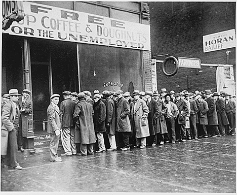
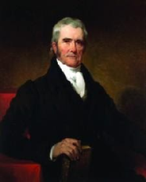
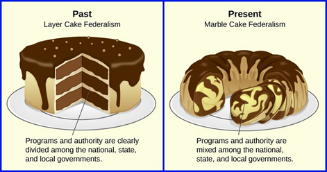
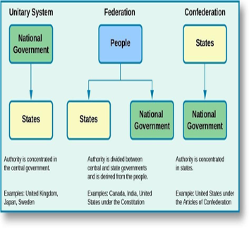
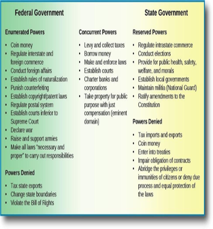
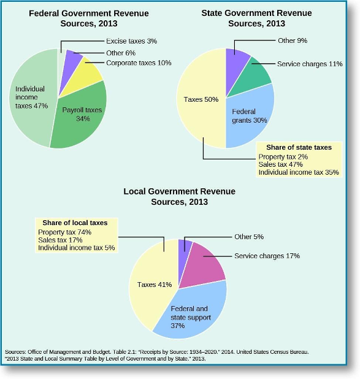
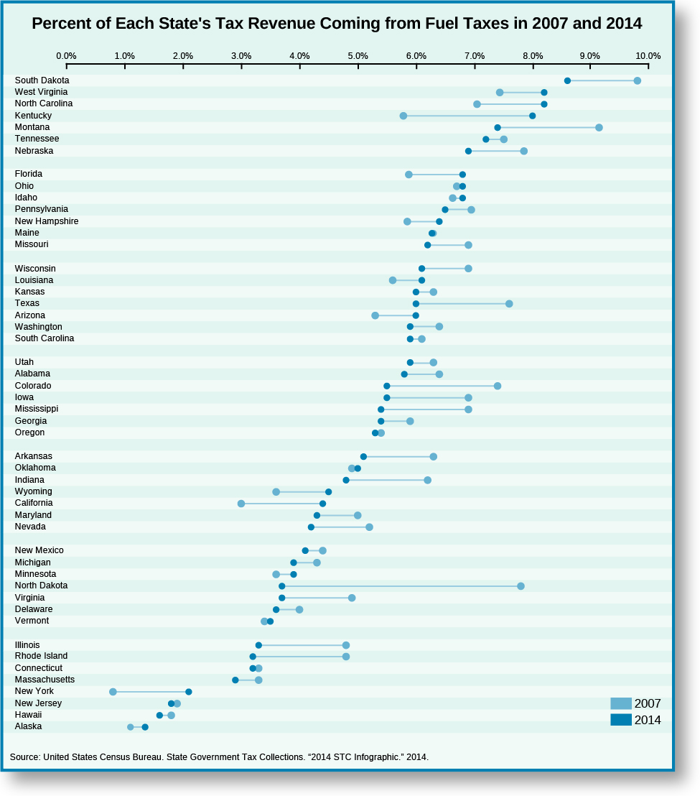
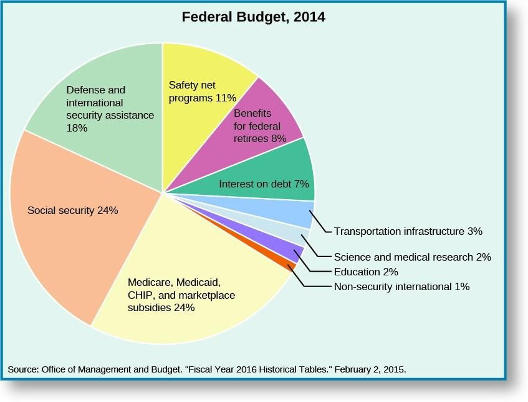
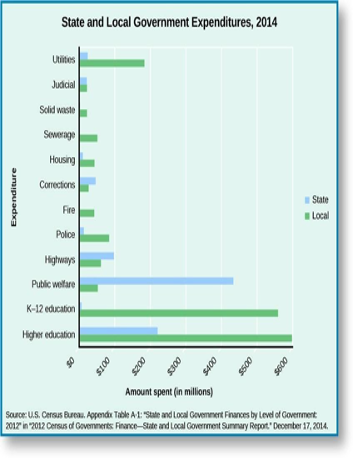

Module 3 Federalism
Federalism
The Evolution of Federalism
Learning Objectives
By the end of this section, you will be able to:
- Analyze the state and federal powers in a constitutional context
Introduction
Federalism is a system of government that creates two relatively autonomous levels of government, each possessing authority granted to them by the national constitution. Federal systems like the one in the United States are different from unitary systems, which concentrate authority in the national government, and from confederations, which concentrate authority in subnational governments.
The Constitution sketches a federal framework that aims to balance the forces of decentralized and centralized governance in general terms; it does not flesh out standard operating procedures that say precisely how the states and federal governments are to handle all policy contingencies imaginable. Therefore, officials at the state and national levels have had some room to maneuver as they operate within the Constitution’s federal design. This has led to changes in the configuration of federalism over time, changes corresponding to different historical phases that capture distinct balances between state and federal authority.
The U.S. Constitution allocates powers to the states and federal government, structures the relationship between these two levels of government, and guides state-to-state relationships. Federal, state, and local governments rely on different sources of revenue to enable them to fulfill their public responsibilities.
Cooperative Federalism
The Great Depression of the 1930s brought economic hardships the nation had never witnessed before. Between 1929 and 1933, the national unemployment rate reached 25 percent, industrial output dropped by half, stock market assets lost more than half their value, thousands of banks went out of business, and the gross domestic product shrunk by one- quarter.
Given the magnitude of the economic depression, there was pressure on the national government to coordinate a robust national response along with the states. Al Capone’s Soup kitchen in Chicago during the Great Depression (1931)

Figure 2.15 A line outside a Chicago soup kitchen in 1931, in the midst of the Great Depression. The sign above reads “Free Soup, Coffee, and Doughnuts for the Unemployed.” Image Credit: National Archives
Cooperative federalism was born of necessity and lasted well into the twentieth century as the national and state governments each found it beneficial. Under this model, both levels of government coordinated their actions to solve national problems, such as the Great Depression and the civil rights struggle of the following decades. In contrast to dual federalism, it erodes the jurisdictional boundaries between the states and national government, leading to a blending of layers as in a marble cake. The era of cooperative federalism contributed to the gradual incursion of national authority into the jurisdictional domain of the states, as well as the expansion of the national government’s power in concurrent policy areas.
The New Deal programs President Franklin D. Roosevelt proposed as a means to tackle the Great Depression ran afoul of the dual-federalism mindset of the justices on the Supreme Court in the 1930s. The court struck down key pillars of the New Deal—the National Industrial Recovery Act and the Agricultural Adjustment Act, for example—on the grounds that the federal government was operating in matters that were within the purview of the states. The court’s obstructionist position infuriated Roosevelt, leading him in 1937 to propose a court-packing plan that would add one new justice for each one over the age of seventy, thus allowing the president to make a maximum of six new appointments.
Before Congress took action on the proposal, the Supreme Court began leaning in support of the New Deal as Chief Justice Charles, Evans Hughes, and Justice Owen Roberts changed their view on federalism.
In National Labor Relations Board (NLRB) v. Jones and Laughlin Steel, for instance, the Supreme Court ruled the National Labor Relations Act of 1935 constitutional, asserting that Congress can use its authority under the commerce clause to regulate both manufacturing activities and labor-management relations. The New Deal changed the relationship Americans had with the national government. Before the Great Depression, the government offered little in terms of financial aid, social benefits, and economic rights. After the New Deal, it provided old-age pensions (Social Security), unemployment insurance, agricultural subsidies, protections for organizing in the workplace, and a variety of other public services created during Roosevelt’s administration.
In the 1960s, President Lyndon Johnson’s administration expanded the national government’s role in society even more. Medicaid (which provides medical assistance to the indigent), Medicare (which provides health insurance to the elderly and disabled), and school nutrition programs were created. The Elementary and Secondary Education Act (1965), the Higher Education Act (1965), and the Head Start preschool program (1965) were established to expand educational opportunities and equality. The Clean Air Act (1965), the Highway Safety Act (1966), and the Fair Packaging and Labeling Act (1966) promoted environmental and consumer protection. Finally, laws were passed to promote urban renewal, public housing development, and affordable housing. In addition to these Great Society programs, the Civil Rights Act (1964) and the Voting Rights Act (1965) gave the federal government effective tools to promote civil rights equality across the country.
Figure 2.16 Lady Bird Johnson, the First Lady, reads to students enrolled in Head Start (a) at the Kemper School in Washington, DC, on March 19, 1966. President Obama visits a Head Start classroom (b) in Lawrence, Kansas, on January 22, 2015.
While the era of cooperative federalism witnessed a broadening of federal powers in concurrent and state policy domains, it is also the era of a deepening coordination between the states and the federal government in Washington. Nowhere is this clearer than with respect to the social welfare and social insurance programs created during the New Deal and Great Society eras, most of which are administered by both state and federal authorities and are jointly funded. The Social Security Act of 1935, which created federal subsidies for state-administered programs for the elderly; people with handicaps; dependent mothers; and children, gave state and local officials wide discretion over eligibility and benefit levels. The unemployment insurance program, also created by the Social Security Act, requires states to provide jobless benefits, but it allows them significant latitude to decide the level of tax to impose on businesses in order to fund the program as well as the duration and replacement rate of unemployment benefits. A similar multilevel division of labor governs Medicaid and Children’s Health Insurance.
Thus, the era of cooperative federalism left two lasting attributes on federalism in the United States. First, a nationalization of politics emerged as a result of federal legislative activism aimed at addressing national problems such as marketplace inefficiencies, social and political inequality, and poverty. The nationalization process expanded the size of the federal administrative apparatus and increased the flow of federal grants to state and local authorities, which have helped offset the financial costs of maintaining a host of New Deal- and Great Society–era programs. The second lasting attribute is the flexibility that states and local authorities were given in the implementation of federal social welfare programs. One consequence of administrative flexibility, however, is that it has led to cross-state differences in the levels of benefits and coverage.
The Struggle Between National Power and State Power
As George Washington’s secretary of the treasury from 1789 to 1795, Alexander Hamilton championed legislative efforts to create a publicly chartered bank. For Hamilton, the establishment of the Bank of the United States was fully within Congress’s authority, and he hoped the bank would foster economic development, print and circulate paper money, and provide loans to the government. Although Thomas Jefferson, Washington’s secretary of state, staunchly opposed Hamilton’s plan on the constitutional grounds that the national government had no authority to create such an instrument, Hamilton managed to convince the reluctant president to sign the legislation.
When the bank’s charter expired in 1811, Jeffersonian Democratic-Republicans prevailed in blocking its renewal. However, the fiscal hardships that plagued the government during the War of 1812, coupled with the fragility of the country’s financial system, convinced Congress and then-president James Madison to create the Second Bank of the United States in 1816. Many states rejected the Second Bank, arguing that the national government was infringing upon the states’ constitutional jurisdiction.
A political showdown between Maryland and the national government emerged when James McCulloch, an agent for the Baltimore branch of the Second Bank, refused to pay a tax that Maryland had imposed on all out-of-state chartered banks. The standoff raised two constitutional questions: Did Congress have the authority to charter a national bank? Were states allowed to tax federal property? In McCulloch v. Maryland, Chief Justice John Marshall argued that Congress could create a national bank even though the Constitution did not expressly authorize it.
Under the necessary and proper clause of Article I, Section 8, the Supreme Court asserted that Congress could establish “all means which are appropriate” to fulfill “the legitimate ends” of the Constitution. In other words, the bank was an appropriate instrument that enabled the national government to carry out several of its enumerated powers, such as regulating interstate commerce, collecting taxes, and borrowing money

Figure 2.13. Chief Justice John Marshall, shown here in a portrait by Henry Inman, was best known for the principle of judicial review established in Marbury v. Madison (1803), which reinforced the influence and independence of the judiciary branch of the U.S. government.
This ruling established the doctrine of implied powers, granting Congress a vast source of discretionary power to achieve its constitutional responsibilities. The Supreme Court also sided with the federal government on the issue of whether states could tax federal property.
Under the supremacy clause of Article VI, legitimate national laws trump conflicting state laws. As the court observed, “the government of the Union, though limited in its powers, is supreme within its sphere of action and its laws, when made in pursuance of the constitution, form the supreme law of the land.” Maryland’s action violated national supremacy because “the power to tax is the power to destroy.” This second ruling established the principle of national supremacy, which prohibits states from meddling in the lawful activities of the national government.
Defining the scope of national power was the subject of another landmark Supreme Court decision in 1824. In Gibbons v. Ogden, the court had to interpret the commerce clause of Article I, Section 8; specifically, it had to determine whether the federal government had the sole authority to regulate the licensing of steamboats operating between New York and New Jersey.
Aaron Ogden, who had obtained an exclusive license from New York State to operate steamboat ferries between New York City and New Jersey, sued Thomas Gibbons, who was operating ferries along the same route under a coasting license issued by the federal government. Gibbons lost in New York state courts and appealed. Chief Justice Marshall delivered a two-part ruling in favor of Gibbons that strengthened the power of the national government. First, interstate commerce was interpreted broadly to mean “commercial intercourse” among states, thus allowing Congress to regulate navigation. Second, because the federal Licensing Act of 1793, which regulated coastal commerce, was a constitutional exercise of Congress’s authority under the commerce clause, federal law trumped the New York State license-monopoly law that had granted Ogden an exclusive steamboat operating license. As Marshall pointed out, “the acts of New York must yield to the law of Congress.”
Various states railed against the nationalization of power that had been going on since the late 1700s. When President John Adams signed the Sedition Act in 1798, which made it a crime to speak openly against the government, the Kentucky and Virginia legislatures passed resolutions declaring the act null on the grounds that they retained the discretion to follow national laws. In effect, these resolutions articulated the legal reasoning underpinning the doctrine of nullification—that states had the right to reject national laws they deemed unconstitutional.
A nullification crisis emerged in the 1830s over President Andrew Jackson’s tariff acts of 1828 and 1832. Led by John Calhoun, President Jackson’s vice president, nullifiers argued that high tariffs on imported goods benefited northern manufacturing interests while disadvantaging economies in the South. South Carolina passed an Ordinance of Nullification declaring both tariff acts null and void and threatened to leave the Union. The federal government responded by enacting the Force Bill in 1833, authorizing President Jackson to use military force against states that challenged federal tariff laws. The prospect of military action coupled with the passage of the Compromise Tariff Act of 1833 (which lowered tariffs over time) led South Carolina to back off, ending the nullification crisis. The ultimate showdown between national and state authority came during the Civil War. Prior to the conflict, in Dred Scott v. Sandford, the Supreme Court ruled that the national government lacked the authority to ban slavery in the territories.
But the election of President Abraham Lincoln in 1860 led eleven southern states to secede from the United States because they believed the new president would challenge the institution of slavery. What was initially a conflict to preserve the Union became a conflict to end slavery when Lincoln issued the Emancipation Proclamation in 1863, freeing all slaves in the rebellious states. The defeat of the South had a huge impact on the balance of power between the states and the national government in two important ways. First, the Union victory put an end to the right of states to secede and to challenge legitimate national laws. Second, Congress imposed several conditions for readmitting former Confederate states into the Union; among them was ratification of the Fourteenth and Fifteenth Amendments. In sum, after the Civil War the power balance shifted toward the national government, a movement that had begun several decades before with McCulloch v. Maryland (1819) and Gibbons v. Odgen (1824).
The period between 1819 and the 1860s demonstrated that the national government sought to establish its role within the newly created federal design, which in turn often provoked the states to resist as they sought to protect their interests. With the exception of the Civil War, the Supreme Court settled the power struggles between the states and national government. From a historical perspective, the national supremacy principle introduced during this period did not so much narrow the states’ scope of constitutional authority as restrict their encroachment on national powers.
Dual Federalism
The late 1870s ushered in a new phase in the evolution of U.S. federalism. Under dual federalism, the states and national government exercise exclusive authority in distinctly delineated spheres of jurisdiction. Like the layers of a cake, the levels of government do not blend with one another but rather are clearly defined. Two factors contributed to the emergence of this conception of federalism. First, several Supreme Court rulings blocked attempts by both state and federal governments to step outside their jurisdictional boundaries. Second, the prevailing economic philosophy at the time loathed government interference in the process of industrial development.
Industrialization changed the socio-economic landscape of the United States. One of its adverse effects was the concentration of market power. Because there was no national regulatory supervision to ensure fairness in market practices, collusive behavior among powerful firms emerged in several industries.
To curtail widespread anti-competitive practices in the railroad industry, Congress passed the Interstate Commerce Act in 1887, which created the Interstate Commerce Commission. Three years later, national regulatory capacity was broadened by the Sherman Antitrust Act of 1890, which made it illegal to monopolize or attempt to monopolize and conspire in restraining commerce. In the early stages of industrial capitalism, federal regulations were focused for the most part on promoting market competition rather than on addressing the social dislocations resulting from market operations, something the government began to tackle in the 1930s.
The late 1870s ushered in a new phase in the evolution of U.S. federalism. Under dual federalism, the states and national government exercise exclusive authority in distinctly delineated spheres of jurisdiction. Like the layers of a cake, the levels of government do not blend with one another but rather are clearly defined. Two factors contributed to the emergence of this conception of federalism. First, several Supreme Court rulings blocked attempts by both state and federal governments to step outside their jurisdictional boundaries. Second, the prevailing economic philosophy at the time loathed government interference in the process of industrial development.
Industrialization changed the socio-economic landscape of the United States. One of its adverse effects was the concentration of market power. Because there was no national regulatory supervision to ensure fairness in market practices, collusive behavior among powerful firms emerged in several industries.
Figure 2.14. Puck, a humor magazine published from 1871 to 1918, satirized political issues of the day such as federal attempts to regulate commerce and prevent monopolies. “‘Will you walk into my parlor?’ said the spider to the fly” (a) by Udo Keppler depicts a spider labeled “Interstate Commerce Commission” capturing a large fly in a web labeled “The Law” while “Plague take it! Why doesn’t it stay down when I hit it?” (b), also drawn by Keppler, shows President William Howard Taft and his attorney general, George W. Wickersham, trying to beat a “Monopoly” into submission with a stick labeled “Sherman Law. The new federal regulatory regime was dealt a legal blow early in its existence. In 1895, in United States v. E. C. Knight, the Supreme Court ruled that the national government lacked the authority to regulate manufacturing.
The case came about when the government, using its regulatory power under the Sherman Act, attempted to override American Sugar’s purchase of four sugar refineries, which would give the company a commanding share of the industry. Distinguishing between commerce among states and the production of goods, the court argued that the national government’s regulatory authority applied only to commercial activities. If manufacturing activities fell within the purview of the commerce clause of the Constitution, then “comparatively little of business operations would be left for state control,” the court argued.
In the late 1800s, some states attempted to regulate working conditions. For example, New York State passed the Bakeshop Act in 1897, which prohibited bakery employees from working more than sixty hours in a week. In Lochner v. New York, the Supreme Court ruled this state regulation that capped work hours unconstitutional, on the grounds that it violated the due process clause of the Fourteenth Amendment.
In other words, the right to sell and buy labor is a “liberty of the individual” safeguarded by the Constitution, the court asserted. The federal government also took up the issue of working conditions, but that case resulted in the same outcome as in the Lochner case.
New Federalism
During the administrations of Presidents Richard Nixon (1969–1974) and Ronald Reagan (1981–1989), attempts were made to reverse the process of nationalization—that is, to restore states’ prominence in policy areas into which the federal government had moved in the past. New federalism is premised on the idea that the decentralization of policies enhances administrative efficiency, reduces overall public spending, and improves policy outcomes. During Nixon’s administration, general revenue sharing programs were created that distributed funds to the state and local governments with minimal restrictions on how the money was spent. The election of Ronald Reagan heralded the advent of a “devolution revolution” in U.S. federalism, in which the president pledged to return authority to the states according to the Constitution. In the Omnibus Budget Reconciliation Act of 1981, congressional leaders together with President Reagan consolidated numerous federal grant programs related to social welfare and reformulated them in order to give state and local administrators greater discretion in using federal funds.
However, Reagan’s track record in promoting new federalism was inconsistent. This was partly due to the fact that the president’s devolution agenda met some opposition from Democrats in Congress, moderate Republicans, and interest groups, preventing him from making further advances on that front. For example, his efforts to completely devolve Aid to Families With Dependent Children (a New Deal-era program) and food stamps (a Great Society-era program) to the states were rejected by members of Congress, who feared states would underfund both programs, and by members of the National Governors’ Association, who believed the proposal would be too costly for states. Reagan terminated general revenue sharing in 1986.
Several Supreme Court rulings also promoted new federalism by hemming in the scope of the national government’s power, especially under the commerce clause. For example, in *United States v. Lopez, the court struck down the Gun-Free School Zones Act of 1990, which banned gun possession in school zones.
It argued that the regulation in question did not “substantively affect interstate commerce.” The ruling ended a nearly sixty-year period in which the court had used a broad interpretation of the commerce clause that by the 1960s allowed it to regulate numerous local commercial activities.
However, many would say that the years since the 9/11 attacks have swung the pendulum back in the direction of central federal power. The creation of the Department of Homeland Security federalized disaster response power in Washington, and the Transportation Security Administration was created to federalize airport security. Broad new federal policies and mandates have also been carried out in the form of the Faith-Based Initiative and No Child Left Behind (during the George W. Bush administration) and the Affordable Care Act (during Barack Obama’s administration)
Cooperative Federalism Versus New Federalism
Morton Grodzins coined the cake analogy of federalism in the 1950s while conducting research on the evolution of American federalism. Until then most scholars had thought of federalism as a layer cake, but according to Grodzins the 1930s ushered in “marble-cake federalism”: “The American form of government is often, but erroneously, symbolized by a three-layer cake. A far more accurate image is the rainbow or marble cake, characterized by an inseparable mingling of differently colored ingredients, the colors appearing in vertical and diagonal strands, and unexpected whirls. As colors are mixed in the marble cake, so functions are mixed in the American federal system.”

Figure 2.17. Morton Grodzins, a professor of political science at the University of Chicago, coined the expression “marble-cake federalism” in the 1950s to explain the evolution of federalism in the United States.
Cooperative federalism has several merits:
Because state and local governments have varying fiscal capacities, the national government’s involvement in state activities such as education, health, and social welfare is necessary to ensure some degree of uniformity in the provision of public services to citizens in richer and poorer states.
The problem of collective action, which dissuades state and local authorities from raising regulatory standards for fear they will be disadvantaged as others lower theirs, is resolved by requiring state and local authorities to meet minimum federal standards (e.g., minimum wage and air quality).
Federal assistance is necessary to ensure state and local programs (e.g., water and air pollution controls) that generate positive externalities are maintained. For example, one state’s environmental regulations impose higher fuel prices on its residents, but the externality of the cleaner air they produce benefits neighboring states. Without the federal government’s support, this state and others like it would underfund such programs.
New federalism has advantages as well:
Because there are economic, demographic, social, and geographical differences among states, one-size-fits-all features of federal laws are suboptimal. Decentralization accommodates the diversity that exists across states. By virtue of being closer to citizens, state and local authorities are better than federal agencies at discerning the public’s needs. Decentralized federalism fosters a marketplace of innovative policy ideas as states compete against each other to minimize administrative costs and maximize policy output.
Federalism in the United States has gone through several phases of evolution during which the relationship between the federal and state governments has varied. In the era of dual federalism, both levels of government stayed within their own jurisdictional spheres. During the era of cooperative federalism, the federal government became active in policy areas previously handled by the states. The 1970s ushered in an era of new federalism and attempts to decentralize policy management.
References and Further Reading
The Lehrman Institute. “The Founding Trio: Washington, Hamilton and Jefferson”
McCulloch v. Maryland, 17 U.S. 316 (1819).
Gibbons v. Ogden, 22 U.S. 1 (1824).
Gibbons v. Ogden, 22 U.S. 1 (1824).
W. Kirk Wood. 2008. Nullification, A Constitutional History, 1776–1833. Lanham, MD: University Press of America.
Dred Scott v. Sandford, 60 U.S. 393 (1857).
Joseph R. Marbach, Troy E. Smith, and Ellis Katz. 2005. Federalism in America: An Encyclopedia. Westport, CT: Greenwood Publishing.
Marc Allen Eisner. 2014. The American Political Economy: Institutional Evolution of Market and State. New York: Routledge.
Eisner, The American Political Economy; Stephen Skowronek. 1982. Building a New American State: The Expansion of National Administrative Capacities, 1877– 1920. Cambridge, MA: Cambridge University Press.
United States v. E. C. Knight, 156 U.S. 1 (1895).
Lochner v. New York, 198 U.S. 45 (1905).
Hammer v. Dagenhart, 247 U.S. 251 (1918).
Nicholas Crafts and Peter Fearon. 2010. “Lessons from the 1930s Great Depression,” Oxford Review of Economic Policy 26: 286–287; Gene Smiley. “The Concise Encyclopedia of Economics: Great Depression”
Marbach et al, Federalism in America: An Encyclopedia. ↵
Jeff Shesol. 2010. Supreme Power: Franklin Roosevelt vs. The Supreme Court. New York: W. W. Norton.
National Labor Relations Board (NLRB) v. Jones & Laughlin Steel, 301 U.S. 1 (1937).
Lawrence R. Jacobs and Theda Skocpol. 2014. “Progressive Federalism and the Contested Implemented of Obama’s Health Reform,” In The Politics of Major Policy Reform in Postwar America, eds. Jeffrey A. Jenkins and Sidney M. Milkis. New York: Cambridge University Press.
R. Kent Weaver. 2000. Ending Welfare as We Know It. Washington, DC: The Brookings Institution.
Dilger, “Federal Grants to State and Local Governments,” 30–31.
United States v. Lopez, 514 U.S. 549 (1995).
See Printz v. The United States, 521 U.S. 898 (1997).
Morton Grodzins. 2004. “The Federal System.” In American Government Readings and Cases, ed. P. Woll. New York: Pearson Longman, 74–78.
Licensing and Attribution
CC LICENSED CONTENT, ORIGINAL
Revision and Adaptation. Authored by: Daniel M. Regalado. License: CC BY: Attribution
CC LICENSED CONTENT, SHARED PREVIOUSLY
American Government. Authored by: OpenStax. Provided by: OpenStax; Rice University. Located at: http://cnx.org/contents/5bcc0e59-7345- 421d-8507-a1e4608685e8@18.11 License: CC BY: Attribution License Terms: Download for free at http://cnx.org/contents/5bcc0e59-7345-421d-8507-a1e4608685e8@18.11.
Federalism: A Division of Powers
Learning Objective
By the end of this section, you will be able to:
- Explain how the separation of powers and checks and balances function in practice in Texas
Introduction: Separation of Powers
Modern democracies divide governmental power in two general ways; some, like the United States, use a combination of both structures. The first and more common mechanism shares power among three branches of government—the legislature, the executive, and the judiciary. The second, federalism, apportions power between two levels of government: national and subnational. In the United States, the term federal government refers to the government at the national level, while the term states refers to governments at the subnational level.
Federalism Defined and Contrasted
Federalism is an institutional arrangement that creates two relatively autonomous levels of government, each possessing the capacity to act directly on behalf of the people with the authority granted to it by the national constitution.
Although today’s federal systems vary in design, five structural characteristics are common to the United States and other federal systems around the world, including Germany and Mexico.
First, all federal systems establish two levels of government, with both levels being elected by the people and each level assigned different functions. The national government is responsible for handling matters that affect the country as a whole, for example, defending the nation against foreign threats and promoting national economic prosperity. Subnational, or state governments, are responsible for matters that lie within their regions, which include ensuring the well-being of their people by administering education, health care, public safety, and other public services. By definition, a system like this requires that different levels of government cooperate, because the institutions at each level form an interacting network.
In the U.S. federal system, all national matters are handled by the federal government, which is led by the president and members of Congress, all of whom are elected by voters across the country. All matters at the subnational level are the responsibility of the fifty states, each headed by an elected governor and legislature. Thus, there is a separation of functions between the federal and state governments, and voters choose the leader at each level.
While each level of government is somewhat independent of the others, a great deal of interaction occurs among them. In fact, the ability of the federal and state governments to achieve their objectives often depends on the cooperation of the other level of government. For example, the federal government’s efforts to ensure homeland security are bolstered by the involvement of law enforcement agents working at local and state levels. On the other hand, the ability of states to provide their residents with public education and health care is enhanced by the federal government’s financial assistance.
The second characteristic common to all federal systems is a written national constitution that cannot be changed without the substantial consent of subnational governments. In the American federal system, the twenty-seven amendments added to the Constitution since its adoption were the result of an arduous process that required approval by two-thirds of both houses of Congress and three-fourths of the states. The main advantage of this supermajority requirement is that no changes to the Constitution can occur unless there is broad support within Congress and among states. The potential drawback is that numerous national amendment initiatives—such as the Equal Rights Amendment (ERA), which aims to guarantee equal rights regardless of sex—have failed because they cannot garner sufficient consent among members of Congress or, in the case of the ERA, the states. Some consider an ERA to be unnecessary due to the equal protection afforded by the 14th Amendment.
Third, the constitutions of countries with federal systems formally allocate legislative, judicial, and executive authority to the two levels of government in such a way as to ensure each level some degree of autonomy from the other. Under the U.S. Constitution, the president assumes executive power, Congress exercises legislative powers, and the federal courts (e.g., U.S. district courts, appellate courts, and the Supreme Court) assume judicial powers. In each of the fifty states, a governor assumes executive authority, a state legislature makes laws, and state-level courts (e.g., trial courts, intermediate appellate courts, and supreme courts) possess judicial authority.
Another common characteristic of federalism around the world is that national courts commonly resolve disputes between levels and departments of government. In the United States, conflicts between states and the federal government are adjudicated by federal courts, with the U.S. Supreme Court being the final arbiter. The resolution of such disputes can preserve the autonomy of one level of government, as illustrated recently when the Supreme Court ruled that states cannot interfere with the federal government’s actions relating to immigration.
In other instances, a Supreme Court ruling can erode that autonomy, as demonstrated in the 1940s when, in United States v. Wrightwood Dairy Co., the Court enabled the federal government to regulate commercial activities that occurred within states, a function previously handled exclusively by the states.
Finally, subnational governments are always represented in the upper house of the national legislature, enabling regional interests to influence national lawmaking.
In the American federal system, the U.S. Senate functions as a territorial body by representing the fifty states: Each state elects two senators to ensure equal representation regardless of state population differences. Thus, federal laws are shaped in part by state interests, which senators convey to the federal policymaking process.
Division of power can also occur via a unitary structure or confederation. In contrast to federalism, a unitary system makes subnational governments dependent on the national government, where significant authority is concentrated. Before the late 1990s, the United Kingdom’s unitary system was centralized to the extent that the national government held the most important levers of power. Since then, power has been gradually decentralized through a process of devolution, leading to the creation of regional governments in Scotland, Wales, and Northern Ireland as well as the delegation of specific responsibilities to them. Other democratic countries with unitary systems, such as France, Japan, and Sweden, have followed a similar path of decentralization.

Figure 2.18 There are three general systems of government—unitary systems, federations, and confederations—each of which allocates power differently.
In a confederation, authority is decentralized, and the central government’s ability to act depends on the consent of the subnational governments.
Under the Articles of Confederation (the first constitution of the United States), states were sovereign and powerful while the national government was subordinate and weak. Because states were reluctant to give up any of their power, the national government lacked authority in the face of challenges such as servicing the war debt, ending commercial disputes among states, negotiating trade agreements with other countries, and addressing popular uprisings that were sweeping the country. As the brief American experience with confederation clearly shows, the main drawback with this system of government is that it maximizes regional self-rule at the expense of effective national governance.
Federalism and the Constitution
The Constitution contains several provisions that direct the functioning of U.S. federalism. Some delineate the scope of national and state power, while others restrict it. The remaining provisions shape relationships among the states and between the states and the federal government.
The enumerated powers of the national legislature are found in Article I, Section 8. These powers define the jurisdictional boundaries within which the federal government has authority. In seeking not to replay the problems that plagued the young country under the Articles of Confederation, the Constitution’s framers granted Congress specific powers that ensured its authority over national and foreign affairs. To provide for the general welfare of the populace, it can tax, borrow money, regulate interstate and foreign commerce, and protect property rights, for example. To provide for the common defense of the people, the federal government can raise and support armies and declare war. Furthermore, national integration and unity are fostered with the government’s powers over the coining of money, naturalization, postal services, and other responsibilities.
The last clause of Article I, Section 8, commonly referred to as the elastic clause or the necessary and proper cause, enables Congress “to make all Laws which shall be necessary and proper for carrying” out its constitutional responsibilities. While the enumerated powers define the policy areas in which the national government has authority, the elastic clause allows it to create the legal means to fulfill those responsibilities.
However, the open-ended construction of this clause has enabled the national government to expand its authority beyond what is specified in the Constitution, a development also motivated by the expansive interpretation of the commerce clause, which empowers the federal government to regulate interstate economic transactions. The powers of the state governments were never listed in the original Constitution. The consensus among the framers was that states would retain any powers not prohibited by the Constitution or delegated to the national government.
However, when it came time to ratify the Constitution, a number of states requested that an amendment be added explicitly identifying the reserved powers of the states. What these Anti-Federalists sought was further assurance that the national government’s capacity to act directly on behalf of the people would be restricted, which the first ten amendments (Bill of Rights) provided. The Tenth Amendment affirms the states’ reserved powers: “The powers not delegated to the United States by the Constitution, nor prohibited by it to the States, are reserved to the States respectively, or to the people.” Indeed, state constitutions had bills of rights, which the first Congress used as the source for the first ten amendments to the Constitution.
Some of the states’ reserved powers are no longer exclusively within state domain, however. For example, since the 1940s, the federal government has also engaged in administering health, safety, income security, education, and welfare to state residents. The boundary between intrastate and interstate commerce has become indefinable as a result of broad interpretation of the commerce clause. Shared and overlapping powers have become an integral part of contemporary U.S. federalism. These concurrent powers range from taxing, borrowing, and making and enforcing laws to establishing court systems.
Article I, Sections 9 and 10, along with several constitutional amendments, lay out the restrictions on federal and state authority. The most important restriction Section 9 places on the national government prevents measures that cause the deprivation of personal liberty. Specifically, the government cannot suspend the writ of habeas corpus, which enables someone in custody to petition a judge to determine whether that person’s detention is legal; pass a bill of attainder, a legislative action declaring someone guilty without a trial; or enact an ex post facto law, which criminalizes an act retroactively. The Bill of Rights affirms and expands these constitutional restrictions, ensuring that the government cannot encroach on personal freedoms.

Figure 2.19 Constitutional powers and responsibilities are divided between the U.S. federal and state governments. The two levels of government also share concurrent powers.
The states are also constrained by the Constitution. Article I, Section 10, prohibits the states from entering into treaties with other countries, coining money, and levying taxes on imports and exports. Like the federal government, the states cannot violate personal freedoms by suspending the writ of habeas corpus, passing bills of attainder, or enacting ex post facto laws. Furthermore, the Fourteenth Amendment, ratified in 1868, prohibits the states from denying citizens the rights to which they are entitled by the Constitution, due process of law, or the equal protection of the laws. Lastly, three civil rights amendments—the Fifteenth, Nineteenth, and Twenty-Sixth—prevent both the states and the federal government from abridging citizens’ right to vote based on race, sex, and age. This topic remains controversial because states have not always ensured equal protection.
The supremacy clause in Article VI of the Constitution regulates relationships between the federal and state governments by declaring that the Constitution and federal law are the supreme law of the land. This means that if a state law clashes with a federal law found to be within the national government’s constitutional authority, the federal law prevails. The intent of the supremacy clause is not to subordinate the states to the federal government; rather, it affirms that one body of laws binds the country. In fact, all national and state government officials are bound by oath to uphold the Constitution regardless of the offices they hold. Yet enforcement is not always that simple. In the case of marijuana use, which the federal government defines to be illegal, twenty-three states and the District of Columbia have nevertheless established medical marijuana laws, others have decriminalized its recreational use, and four states have completely legalized it. The federal government could act in this area if it wanted to. For example, in addition to the legalization issue, there is the question of how to treat the money from marijuana sales, which the national government designates as drug money and regulates under laws regarding its deposit in banks.
Various constitutional provisions govern state-to-state relations. Article IV, Section 1, referred to as the full faith and credit clause or the comity clause, requires the states to accept court decisions, public acts, and contracts of other states. Thus, an adoption certificate or driver’s license issued in one state is valid in any other state. The movement for marriage equality has put the full faith and credit clause to the test in recent decades. In light of Baehr v. Lewin, a 1993 ruling in which the Hawaii Supreme Court asserted that the state’s ban on same-sex marriage was unconstitutional, a number of states became worried that they would be required to recognize those marriage certificates.
To address this concern, Congress passed and President Clinton signed the Defense of Marriage Act (DOMA) in 1996. The law declared that “No state (or other political subdivision within the United States) need recognize a marriage between persons of the same sex, even if the marriage was concluded or recognized in another state.” The law also barred federal benefits for same-sex partners.
DOMA clearly made the topic a state matter. It denoted a choice for states, which led many states to take up the policy issue of marriage equality.
Scores of states considered legislation and ballot initiatives on the question. The federal courts took up the issue with zeal after the U.S. Supreme Court in United States v. Windsor struck down the part of DOMA that outlawed federal benefits.
That move was followed by upwards of forty federal court decisions that upheld marriage equality in particular states. In 2014, the Supreme Court decided not to hear several key case appeals from a variety of states, all of which were brought by opponents of marriage equality who had lost in the federal courts. The outcome of not hearing these cases was that federal court decisions in four states were affirmed, which, when added to other states in the same federal circuit districts, brought the total number of states permitting same-sex marriage to thirty.
Then, in 2015, the Obergefell v. Hodges case had a sweeping effect when the Supreme Court clearly identified a constitutional right to marriage based on the Fourteenth Amendment.
The privileges and immunities clause of Article IV asserts that states are prohibited from discriminating against out-of-staters by denying them such guarantees as access to courts, legal protection, property rights, and travel rights. The clause has not been interpreted to mean there cannot be any difference in the way a state treats residents and non-residents.
For example, individuals cannot vote in a state in which they do not reside, tuition at state universities is higher for out-of-state residents, and in some cases individuals who have recently become residents of a state must wait a certain amount of time to be eligible for social welfare benefits. Another constitutional provision prohibits states from establishing trade restrictions on goods produced in other states. However, a state can tax out-of-state goods sold within its borders as long as state-made goods are taxed at the same level.
The Distribution of Finances
Federal, state, and local governments depend on different sources of revenue to finance their annual expenditures. In 2014, total revenue (or receipts) reached $3.2 trillion for the federal government, $1.7 trillion for the states, and $1.2 trillion for local governments.
Two important developments have fundamentally changed the allocation of revenue since the early 1900s. First, the ratification of the Sixteenth Amendment in 1913 authorized Congress to impose income taxes without apportioning it among the states on the basis of population, a burdensome provision that Article I, Section 9, had imposed on the national government.
With this change, the federal government’s ability to raise revenue significantly increased and so did its ability to spend.
The second development regulates federal grants, that is, transfers of federal money to state and local governments. These transfers, which do not have to be repaid, are designed to support the activities of the recipient governments, but also to encourage them to pursue federal policy objectives they might not otherwise adopt. The expansion of the federal government’s spending power has enabled it to transfer more grant money to lower government levels, which has accounted for an increasing share of their total revenue.
The sources of revenue for federal, state, and local governments are detailed in Figure 3. Although the data reflect 2013 results, the patterns we see in the figure give us a good idea of how governments have funded their activities in recent years. For the federal government, 47 percent of 2013 revenue came from individual income taxes and 34 percent from payroll taxes, which combine Social Security tax and Medicare tax.

Figure 2.20 As these charts indicate, federal, state, and local governments raise revenue from different sources.
For state governments, 50 percent of revenue came from taxes, while 30 percent consisted of federal grants. Sales tax—which includes taxes on purchased food, clothing, alcohol, amusements, insurance, motor fuels, tobacco products, and public utilities, for example—accounted for about 47 percent of total tax revenue, and individual income taxes represented roughly 35 percent. Revenue from service charges (e.g., tuition revenue from public universities and fees for hospital-related services) accounted for 11 percent.
The tax structure of states varies. Alaska, Florida, Nevada, South Dakota, Texas, Washington, and Wyoming do not have individual income taxes.
Figure 2.20 illustrates yet another difference: Fuel tax as a percentage of total tax revenue is much higher in South Dakota and West Virginia than in Alaska and Hawaii. However, most states have done little to prevent the erosion of the fuel tax’s share of their total tax revenue between 2007 and 2014 (notice that for many states the dark blue dots for 2014 are to the left of the light blue numbers for 2007). Fuel tax revenue is typically used to finance state highway transportation projects, although some states do use it to fund non-transportation projects.

Figure 2.21. The fuel tax as a percentage of tax revenue varies greatly across states.
The most important sources of revenue for local governments in 2013 were taxes, federal and state grants, and service charges. For local governments the property tax, a levy on residential and commercial real estate, was the most important source of tax revenue, accounting for about 74 percent of the total. Federal and state grants accounted for 37 percent of local government revenue. State grants made up 87 percent of total local grants. Charges for hospital-related services, sewage and solid- waste management, public city university tuition, and airport services are important sources of general revenue for local governments.
Intergovernmental grants are important sources of revenue for both state and local governments. When economic times are good, such grants help states, cities, municipalities, and townships carry out their regular functions. However, during hard economic times, such as the Great Recession of 2007–2009, intergovernmental transfers provide much- needed fiscal relief as the revenue streams of state and local governments dry up. During the Great Recession, tax receipts dropped as business activities slowed, consumer spending dropped, and family incomes decreased due to layoffs or work-hour reductions. To offset the adverse effects of the recession on the states and local governments, federal grants increased by roughly 33 percent during this period.
In 2009, President Obama signed the American Recovery and Reinvestment Act (ARRA), which provided immediate economic-crisis management assistance such as helping local and state economies ride out the Great Recession and shoring up the country’s banking sector. A total of $274.7 billion in grants, contracts, and loans was allocated to state and local governments under the ARRA.
The bulk of the stimulus funds apportioned to state and local governments was used to create and protect existing jobs through public works projects and to fund various public welfare programs such as unemployment insurance.
How are the revenues generated by our tax dollars, fees we pay to use public services and obtain licenses, and monies from other sources put to use by the different levels of government? A good starting point to gain insight on this question as it relates to the federal government is Article I, Section 8, of the Constitution. Recall, for instance, that the Constitution assigns the federal government various powers that allow it to affect the nation as a whole. A look at the federal budget in 2014 shows that the three largest spending categories were Social Security (24 percent of the total budget); Medicare, Medicaid, the Children’s Health Insurance Program, and marketplace subsidies under the Affordable Care Act (24 percent); and defense and international security assistance (18 percent). The rest was divided among categories such as safety net programs (11 percent), including the Earned Income Tax Credit and Child Tax Credit, unemployment insurance, food stamps, and other low-income assistance programs; interest on federal debt (7 percent); benefits for federal retirees and veterans (8 percent); and transportation infrastructure (3 percent).
It is clear from the 2014 federal budget that providing for the general welfare and national defense consumes much of the government’s resources—not just its revenue, but also its administrative capacity and labor power.
 Figure 2.22. Approximately two-thirds of the federal budget is spent in just three categories: Social Security, health care and health insurance programs, and defense.
Figure 2.22 compares recent spending activities of local and state governments. Educational expenditures constitute a major category for both. However, whereas the states spend comparatively more than local governments on university education, local governments spend even more on elementary and secondary education. That said, nationwide, state funding for public higher education has declined as a percentage of university revenues; this is primarily because states have taken in lower amounts of sales taxes as internet commerce has increased. Local governments allocate more funds to police protection, fire protection, housing and community development, and public utilities such as water, sewage, and electricity. And while state governments allocate comparatively more funds to public welfare programs, such as health care, income support, and highways, both local and state governments spend roughly similar amounts on judicial and legal services and correctional services.
 Figure 2.23 This list includes some of the largest expenditure items for state and local governments.
References and Further Reading
See John Kincaid. 1975. “Federalism.” In Civitas: A Framework for Civil Education, eds. Charles Quigley and Charles Bahmueller. Calabasas, CA: Center for Civic Education, 391–392; William S. Riker. 1975. “Federalism.” In Handbook of Political Science, eds. Fred Greenstein and Nelson Polsby. Reading, MA: Addison-Wesley, 93–172.
Garry Willis, ed. 1982. The Federalist Papers by Alexander Hamilton, James Madison and John Jay. New York: Bantam Books, 237.
Arizona v. United States, 567 U.S. (2012).
United States v. Wrightwood Dairy Co., 315 U.S. 110 (1942).
Ronald L. Watts. 1999. Comparing Federal Systems, 2nd ed. Kingston, Ontario: McGill-Queen’s University, 6–7; Daniel J. Elazar. 1992. Federal Systems of the World: A Handbook of Federal, Confederal and Autonomy Arrangements. Harlow, Essex: Longman Current Affairs.
Jack Rakove. 2007. James Madison and the Creation of the American Republic. New York: Pearson; Samuel H. Beer. 1998. To Make a Nation: The Rediscovery of American Federalism. Cambridge, MA: Harvard University Press.
Elton E. Richter. 1929. “Exclusive and Concurrent Powers in the Federal Constitution (http://scholarship.law.nd.edu/cgi/viewcontent.cgi? article=4416&context=ndlr),” Notre Dame Law Review 4, No. 8: 513–542.
Baehr v. Lewin. 1993. 74 Haw. 530.
United States v. Windsor, 570 U.S. (2013).
Adam Liptak, “Supreme Court Delivers Tacit Win to Gay Marriage,” New York Times, 6 October, 2014.
Obergefell v. Hodges, 576 U.S. (2015).
Data reported by http://www.usgovernmentrevenue.com/federal_revenue (https://www.google.com/url? q=http://www.usgovernmentrevenue.com/federal_revenue&sa=D&ust=1552679317723000). State and local government figures are estimated.
Pollock v. Farmers’ Loan & Trust Co., 158 U.S. 601 (1895).
See Robert Jay Dilger, “Federal Grants to State and Local Governments: A Historical Perspective on Contemporary Issues,” Congressional Research Service, Report 7-5700, 5 March 2015.
Jeffrey L. Barnett et al. 2014. 2012 Census of Governments: Finance-State and Local Government Summary Report, Appendix Table A-1. December 17. Washington, DC: United States Census Bureau, 2.
Dilger, “Federal Grants to State and Local Governments,” 4.
James Feyrer and Bruce Sacerdote. 2011. “Did the Stimulus Stimulate? Real Time Estimates of the Effects of the American Recovery and Reinvestment Act” (Working Paper No. 16759 (http://www.nber.org/papers/w16759.pdf)), Cambridge, MA: National Bureau of Economic Research.
Data reported by the Center on Budget and Policy Priorities. 2015. “Policy Basics: Where Do Our Federal Tax Dollars Go? (http://www.cbpp.org/research/policy- basics-where-do-our-federal-tax-dollars-go)” March 11.
Licensing and Attribution
CC LICENSED CONTENT, ORIGINAL
Revision and Adaptation. Authored by: Daniel M. Regalado. License: CC BY: Attribution
CC LICENSED CONTENT, SHARED PREVIOUSLY
American Government. Authored by: OpenStax. Provided by: OpenStax; Rice University. Located at: http://cnx.org/contents/5bcc0e59-7345- 421d-8507-a1e4608685e8@18.11. License: CC BY: Attribution
License Terms: Download for free at http://cnx.org/contents/5bcc0e59-7345-421d-8507-a1e4608685e8@18.11.
Glossary: The Texas State Constitution and Federalism
coercive federalism: federal policies that force states to change their policies to achieve national goals
comity: the legal principle that political entities (such as states, nations, or courts from different jurisdictions) will mutually recognize each other’s legislative, executive, and judicial acts. The underlying notion is that different jurisdictions will reciprocate each other’s judgments out of deference, mutuality, and respect.
concurrent powers: shared state and federal powers that range from taxing, borrowing, and making and enforcing laws to establishing court systems
cooperative federalism: a type of federalism existing since the New Deal era in which grants-in-aid have been used to encourage states and localities (without commanding them) to pursue nationally defined goals; also known as “intergovernmental cooperation”
devolution: a process in which powers from the central government in a unitary system are delegated to subnational units
dual federalism: the system of government that prevailed in the U.S. from 1789 to 1937, during which most fundamental governmental powers were strictly separated between the federal and state governments
elastic clause: the last clause of Article I, Section 8, which enables the national government “to make all Laws which shall be necessary and proper for carrying” out all its constitutional responsibilities
federalism: an institutional arrangement that creates two relatively autonomous levels of government, each possessing the capacity to act directly on the people with authority granted by the national constitution.
full faith and credit: clause found in Article IV, Section 1, of the Constitution, this clause requires states to accept court decisions, public acts, and contracts of other states; also referred to as the comity provision
privileges and immunities clause: found in Article IV, Section 2, of the Constitution, this clause prohibits states from discriminating against out-of- staters by denying such guarantees as access to courts, legal protection, and property and travel rights
separation of powers: the division of governmental power among several institutions that must cooperate in decision making.
states: governments at the subnational level
unitary system: a centralized system of government in which the subnational government is dependent on the central government, where substantial authority is concentrated
References and Further Reading
Cornell Law School: Legal Information Institute. Comity. Accessed August 25, 2019
Licensing and Attribution
CC LICENSED CONTENT, ORIGINAL
The Texas State Constitution and the American Federal System: Glossary. Authored by: John Osterman. License: CC BY: Attribution